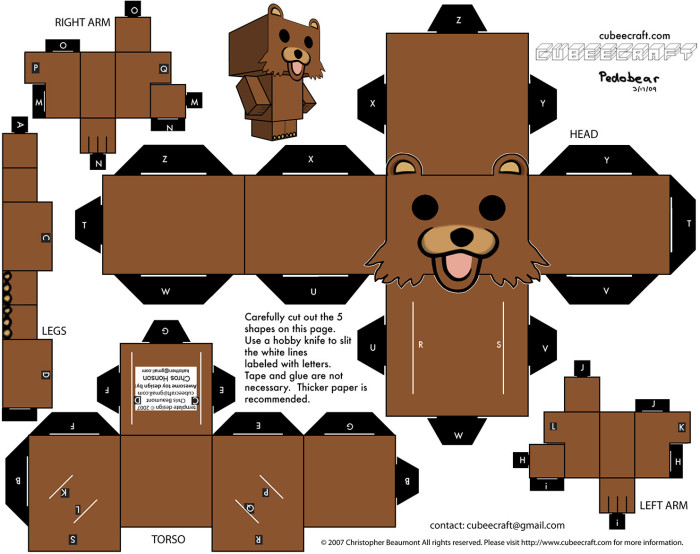
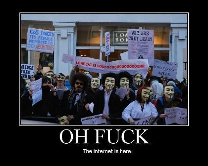
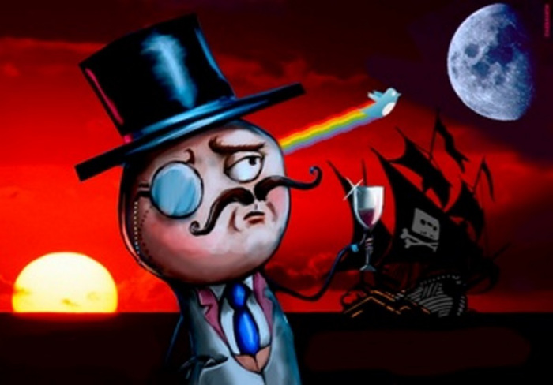
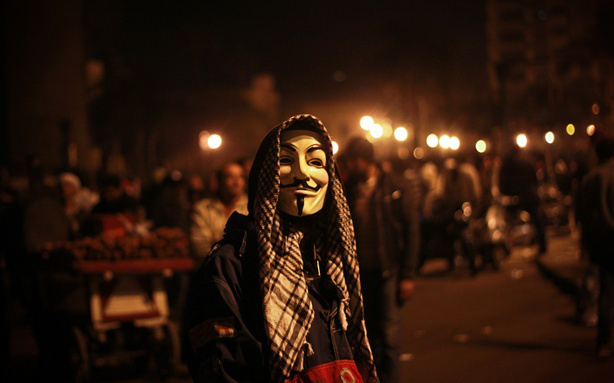

Anonymous — самая известная неформальная группа хактивистов в мире. Из-за отсутствия формальной организационной иерархии деятельность Anonymous трудно объяснить широкой публике и СМИ. В этой статье я объясню историю группы и развею некоторые заблуждения.
“Хактивист” объединяет в себе и “хакера”, и “активиста”. Если у человека есть технические навыки, доступ к Интернету и понимание того, как работает сетевая инфраструктура и серверы, соблазнительно использовать эти знания ради изменения мира. “Активизм” предполагает, что хактивист не использует свои хакерские и крэкерские навыки без причины. Людей, стоящих за Anonymous, объединяет убежденность в том, что корпорации и организации, которые они считают коррумпированными, заслуживают того, чтобы атаковать их. Если вы администратор сети, атаковать которую “не имеет смысла”, едва ли она подвергнется атаке. Рекомендую также тестировать сеть на устойчивость к DDoS-атакам, потому что это самый популярный инструмент в арсенале Anonymous.
Не все действия Anonymous включают проведение атак на сети или веб-сайты — Anonymous также активно инициируют общественные протесты. Однако настоящая кровь группы — это веб-форумы и IRC-чаты. Без Интернета не было бы и Anonymous.2003: 4chan
4chan — это так называемый имиджборд, запущенный 1 октября 2003 года. Сайт был создан под впечатлением от сайта 2channel — интернет-форума с самым разным контентом, особенно популярного в Японии. 2channel появился в 1999-м. Он содержит более 600 досок по самым разным темам, таким как кулинария, новости и компьютеры. Посетители 2channel обычно публикуют сообщения анонимно, при этом бОльшая часть контента на сайте — на японском языке.
Создатель и администратор 4chan известен под псевдонимом ‘moot’. Raspberry Heaven — это IRC-сообщество, которое изначально состояло из участников ‘Anime Death Tentacle Rape Whorehouse‘ — подфорума SomethingAwful.com, — и ‘moot’ был участником Raspberry Heaven.
,p.Как и на 2channel, на 4chan можно публиковать сообщения анонимно, однако, в отличие от 2channel, общение в 4chan ведется в основном на английском. Хотя, скорее, на английском и слэнге, основанном на различных интернет-мемах. Любой постер на форуме, оставивший поле имени пустым, автоматически получает имя ‘Anonymous’. На большинстве форумов 4chan затрагивается японская поп-культура, но самым популярным на 4chan является раздел /b/./b/ сам по себе имеет удивительную культуру. Многие графические мемы, циркулирующие по всему Интернету, в том числе LOLcats, ‘All your base are belong to us‘ и Педобир, появились на форуме /b/. Поскольку это имиджборд, большинство сообщений содержат изображения, добавленные пользователями. Обычно их публикуют с целью удивить, оскорбить или удивить и оскорбить одновременно. Большинство сообщений анонимны.
2008: Проект Chanology
14 января 2008 года на YouTube утекло видео Церкви саентологии — пропагандистский ролик с истерическим смехом Тома Круза. Я предполагаю, что это видео высмеяли на форуме /b/ и связанных IRC-каналах. Поскольку клип якобы выставлял саентологию в невыгодном свете, секта попыталась заставить YouTube удалить видео под предлогом “нарушения авторских прав”. В ответ на это требование 21 января на YouTube было опубликовано приписываемое Anonymous видео с названием “Послание для саентологов“. Так начался проект Chanology.
Был опубликован пресс-релиз, описывающий суть проекта Chanology. В релизе объяснялось, почему Церковь саентологии является опасной организацией, и говорилось, что попытка секты заставить YouTube удалить видео с Томом Крузом из Интернета является нарушением свободы слова. Церковь саентологии имеет репутацию организации, подвергающей своих членов жесткой финансовой эксплуатации, и рассылает угрозы людям, которые пытаются ее покинуть. 28 января на YouTube был опубликован также приписываемый Anonymous “Призыв к действию“, имевший целью организовать 10 февраля протесты у центров Церкви саентологии по всему миру. Кроме того, в январе на сайт секты была проведена DDoS-атака.
Многие протестующие против Церкви саентологии носили маски Гая Фокса из популярного фильма “V — значит вендетта”, чтобы скрыть свои лица от секты, не брезгующей атаками на отступников, которых в саентологии называют ‘Suppressive Persons’.
10 февраля, 15 марта и 12 апреля у центров Церкви саентологии прошли международные протесты, в которых приняли участие тысячи людей.
23 марта в ПО веб-форумов Американского фонда по борьбе с эпилепсией злоумышленниками был внедрен код JavaScript, генерирующий анимации, способные вызвать эпилептический припадок. В атаке обвинили пользователей с 7chan.org (другого сайтa, вдохновленного 2channel и 4chan), а позднее Anonymous. Администраторы 7chan считали, что атака была проведена Церковью саентологии, чтобы подставить Anonymous, и я тоже так думаю. Известно множество эпизодов того, как секта предпринимала злонамеренные действия против отступников.
2009: Проект Skynet и Операция Didgeridie
В июне 2009 года в Иране был избран президент Махмуд Ахмадинежад, что стало поводом для протестов по всей стране. В ответ была сформирована группа Anonymous Iran — онлайн-партнерство Anonymous и The Pirate Bay — популярного, но преследуемого торрент-трекера. Anonymous Iran предложили иранцам безопасную трибуну для общения с миром, в то время как иранское правительство пыталось воспрепятствовать распространению новостей о бунтах. В том же месяце Anonymous запустили проект Skynet для борьбы с интернет-цензурой во всем мире.
В сентябре была проведена операция Didgeridie, поводом для которой послужили планы австралийского правительства ввести цензуру Интернета на уровне провайдеров. 9-го сентября Anonymous в знак протеста запустили DDoS-атаку на веб-сайт премьер-министра Австралии Кевина Радда (Kevin Rudd), примерно на час сделав его недоступным.
2010: Операция Titstorm, Операция Payback и WikiLeaks
В феврале австралийское правительство рассматривало законопроект о запрете порнографии с женской эякуляцией и порноактрисами с небольшой грудью (очевидно, в рамках борьбы с педофилией). В ответ на это 10-го февраля Anonymous провели операцию Titstorm, отправив в нокдаун ряд веб-сайтов австралийского правительства с помощью DDoS-атак.
В сентябре была проведена операция Payback. MPAA (Американская ассоциация кинокомпаний) и RIAA (Американская ассоциация звукозаписывающих компаний) наняли индийского разработчика ПО AIPLEX для проведения DDoS-атак на The Pirate Bay и другие веб-сайты, вовлеченные в обмен файлами. В отместку Anonymous опубликовали следующее:
“Операция “Не плюй в колодец”. Информируем вас, что мы, Anonymous, организуем Операцию под названием “Не плюй в колодец”. Anonymous будут атаковать RIAA (Recording Industry Association of America), MPAA (Motion Pictures Association of America) и их наемников AIPLEX за атаки против популярного торрент-трекера Piratebay (www.thepiratebay.org). Мы заблокируем доступ к сайтам неприятеля и будем держать их недоступными, сколько сможем. Зачем? Anonymous сыты по горло интригами корпоративных толстосумов, контролирующих Интернет и лишающих людей права не только на распространение информации, но даже на ОБМЕН друг с другом. RIAA и MPAA притворяются, что помогают артистам и их делу — в действительности они этого не делают. В их взглядах — не надежда, а лишь знаки доллара. Anonymous больше не собираются это терпеть. Желаем всего наилучшего. Искренне ваши, Anonymous. Имя нам — Легион.
Далее Anonymous запустили DDoS-атаки на веб-сайты MPAA, RIAA и AIPLEX.
Операция Payback продолжилась в декабре, но в этот раз мишенями стали Mastercard, Visa, Paypal, Bank of America и Amazon за то, что они заблокировали пожертвования сайту WikiLeaks, на котором разоблачители могут публиковать инсайдерскую информацию о действиях коррумпированных правительств по всему миру. К 8-му декабря DDoS-атаками были уложены на лопатки веб-сайты Mastercard и Visa.
На уик-энд 11-го и 12-го декабря крэкеры вторглись в сеть Gawker Media. Эта онлайновая медиакомпания, известная популярными блогами вроде Gawker.com, Jezebel.com и Gizmodo.com, использовала для корпоративных частов приложение Campfire. Крэкеры взломали административные учетные записи в сети Gawker — возможно, брут-форсом, атакой по словарю или с помощью радужных таблиц. Из чата Campfire крэкеры смогли получить еще больше административных учетных записей, а в конечном итоге — имена и пароли тысяч пользователей сети Gawker.
Также была взломана одна из принадлежащих Gawker официальных учетных записей Twitter. Крэкеры отправили с учетной записи Gizmodo такой твит:
“Gawker.com Gizmodo.com Lifehacker.com взломаны, взяты 1,5 миллиона учетных записей/адресов эл. почты/паролей”.
2011: арабская весна, HBGary Federal, GeoHot и Occupy Wall Street
Начиная со 2-го января Anonymous путем дополнительных DDoS-атак сделали недоступными веб-сайты тунисской фондовой биржи и тунисского министерства промышленности. Это было реакцией на цензуру, применяемую тунисским правительством, которое пыталось ограничить для своих граждан доступ в Интернет. К 6-му числу полиция Туниса арестовала многих блоггеров и киберактивистов, которые критиковали правительство.
К 26-му января атаки были переориентированы на египетское правительство. Все началось с попыток отстранить президента Египта Хосни Мубарака от власти. Как только правительство Египта заблокировало для египтян доступ к Твиттеру, Anonymous к 3 часам вечера по Североамериканскому восточному времени положили DDoS-атаками веб-сайты египетского правительства.
5-го февраля Аарон Барр из агентства безопасности HBGary Federal объявил, что инфильтрировался в Anonymous и обнародует некоторую информацию на пресс-конференции.
На веб-сайте HBGary использовалась система управления контентом с несколькими брешами в защите. Благодаря им Anonymous с помощью SQL-инъекции смогли получить доступ к базам данных сайта и скопировать имена пользователей, адреса электронной почты и хеши паролей. С помощю радужных таблиц были взломаны алгоритмы хеширования MD5, так что в итоге стала доступной вся база данных.
В конечном итоге компания, которая разработала систему управления контентом HBGary, была расформирована.
Ко 2-му апреля следующей мишенью Anonymous стала корпорация Sony. Принадлежащая Sony компания PlayStation Network забанила пользователя GeoHot за джейлбрейк и модификацию консоли PS3. GeoHot привлек внимание Sony, опубликовав информацию о том, как создать для PS3 мод для доступа к Интернету.
В апреле PlayStation Network и другие веб-сайты Sony стали недоступны из-за организованных DDoS-атак — Anonymous явились, чтобы защитить GeoHot. Потребовалось несколько недель, чтобы сеть PlayStation Network вернулась в нормальный режим работы.
В середине июля читатели журнала Adbusters, выступающего против консьюмеризма, начали обсуждать, что можно сделать с корпоративной коррупцией на Уолл-стрит. В результате было организовано движение Occupy Wall Street с планом приступить 17 сентября к массовым протестам на Уолл-стрит.
23 августа Anonymous выразили поддержку движению Occupy Wall Street, опубликовав на YouTube следующее видео: https://www.youtube.com/watch?t=85&v=l6jdkpQjueo
К 17 сентября к протесту присоединились многие тысячи людей, и он стал постоянным. Anonymous и их сторонники описывали движение в блогах, связанных с Anonymous. В сентябре и октябре к движению Occupy присоединились многие города мира, такие как Чикаго, Торонто, Лондон, Токио, Мадрид, Милан и Стокгольм.
На протестующих можно часто увидеть популярные маски Гая Фокса, которые теперь прочно ассоциируются с Anonymous. Ставшее международным движение получило широкую огласку в СМИ. Мне думается, что движение Occupy — это реакция общества на обострение экономических проблем по всему миру.
“Хактивизм” стал массовым, и Anonymous далеко не одни. Администраторам сетей, серверов и баз данных, которые могут подвергнуться атакам, рекомендуется регулярно проводить аудит безопасности, усилить защиту сетей от DDoS-атак, применять виртуализацию и прокси-серверы, когда это возможно, и использовать сложные пароли и хеши. Особое внимание следует уделить серверам, на которых хранятся ключи шифрования.
Интернет и информационная эпоха ускоряют эволюцию общества и социального активизма. Становится все труднее цензурировать какую бы то ни было информацию. Я с воодушевлением смотрю на то, как сетевые технологии изменяют мир, и к лучшему — чаще, чем к худшему.
Источник: infosecinstitute.com, 24 октября 2011 года